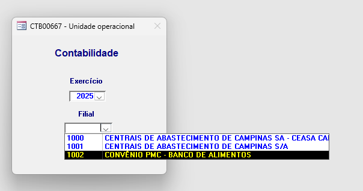
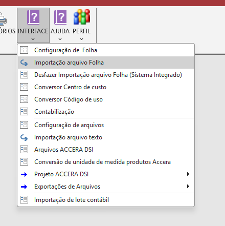
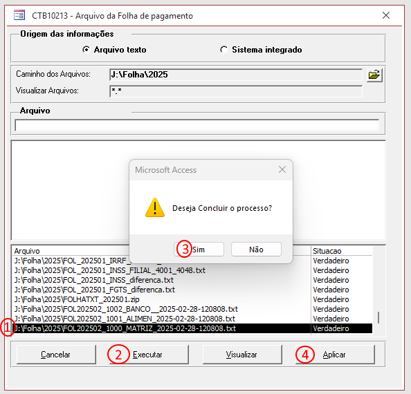
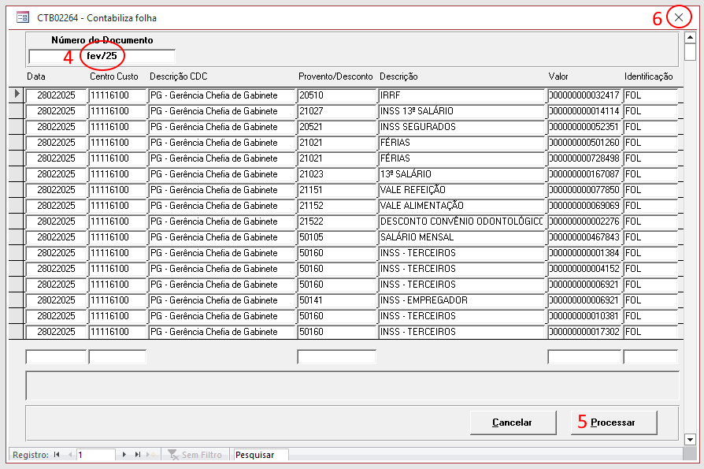
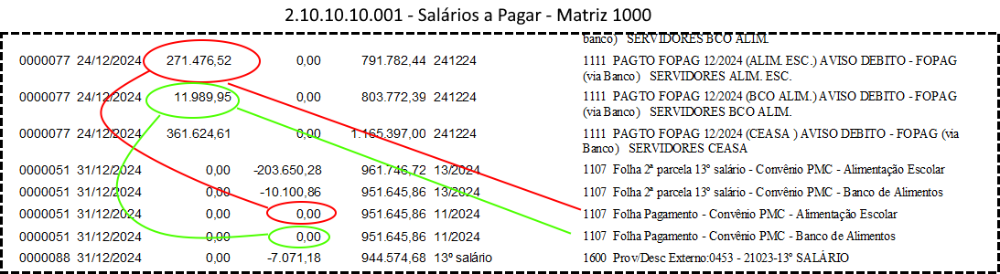
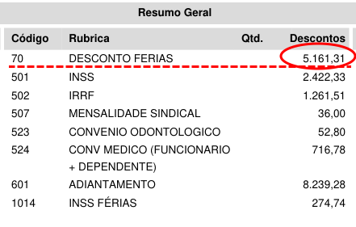
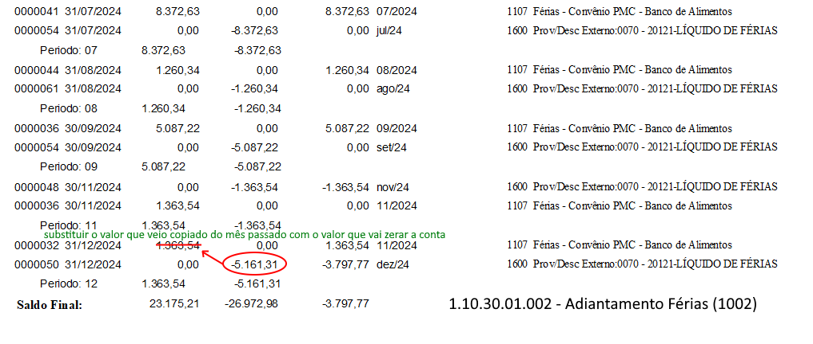
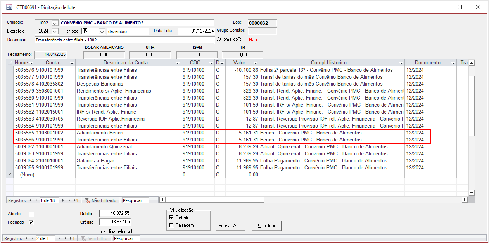
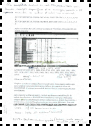

- Fazer a divisão do arquivo de folha na linha de comando usando o script ceasahelper.exe -t nome_do_arquivo.txt
- Seguir as instruções abaixo começando com o Banco de Alimentos 1002 (que é o mais fácil)
- Certificar-se de que selecionou o Banco de Alimentos (depois vai fazer o mesmo para 1001 e 1000)
- INTERFACE → Importação arquivo folha
- Executar → Deseja Concluir o processo? → Sim
- Aguardar "importação sendo efetuada"
- Aplicar
- Completar o número do documento mmm/AA (ex: dez/24)
- Processar
- Aguardar "Contabilização Sendo Efetuada..."
- Depois que aparecer a mensagem de concluída, clicar no X para fechar.
- Volte ao topo e repita as instruções acima, agora para 1001 e 1000
- Após a importação, deverão ser feitos lançamentos alterando os lotes de fechamento da Matriz de maneira a zerar as seguintes contas abaixo. Os lançamentos deverão ser feitos de acordo com a figura. Caso o Nilson ainda não tenha feito esses lançamentos (que tem contrapartida na conta Banco Movimento) basta lançar os valores líquidos que vem na folha de pagamento da Alimentação Escolar e do Banco de Alimentos.
- As duas contas que precisam ficar zeradas são as seguintes:
- Para fazer o lançamento de Adiantamente Quinzenal, precisa abrir novamente o PDF da folha e olhar no resumo a rúbrica 601 ADIANTAMENTO
- Finalmente, é preciso fazer lançamentos na conta Adiantamente de férias (Matriz). Essa conta não deve zerar pois sempre há aqueles que tiraram férias em um mês mas receberam o adiantamento de férias no mês anterior. Para fazer os lançamentos da conta de adiantamento de férias, precisa pegar a o resumo da folha de pagamento, rúbrica 70 (DESCONTO FERIAS) e lançar tanto para a Alimentação Escolhar (filial) quanto para o Banco de Alimentos (cuja folha fica no diretório da Matriz)
- Depois de trabalhar com as contas da Matriz, chegou a hora de fazer algo parecido porém com as contas das filiais 1001 e 1002. As 3 contas abaixo vão precisar ficar com os saldos totalmente zerados. Para isso será usada a conta de transferência entre filiais:
- Após a importação, as seguintes contas devem ser investigadas:
- Salários a Pagar
- Remuneração Conselheiros
- Pensão Alimentícia
- Consignação Folha
- Abaixo a documentação da Juliana para referência





| Adiantamento quinzenal (Matriz) | 1103001001 |
| Salários a pagar (Matriz) | 2101010001 |
| Remuneração Conselheiros (Matriz) | 2101010003 |
| Adiantamento de férias | 1103001002 |

| Adiantamento quinzenal (1001 e 1002) | 1103001001 |
| Salários a pagar (1001 e 1002) | 2101010001 |
| Adiantamento de férias (1001 e 1002) | 1103001002 |


